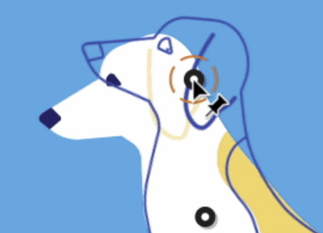

Sneak Peek 2018
The freeform gradients tool naturally lets you control the diffusion of colors across your vector graphics and is one of many ways we are looking into making the Gradient Mesh tool easier and faster to use.

Illustrator CC 2017
Puppet Warp lets you twist and distort parts of your artwork, such that the transformations appear natural. You can add, move, and rotate pins to seamlessly transform your artwork into different variations using the Puppet Warp tool in Illustrator.
Dimension CC 2017
Using deep learning, we can automatically estimate the perspective a photograph was taken from, making it much easier to composite 3D content into those scenes. This is an application of our CVPR 2017 paper on Deep Single Image Camera Calibration.